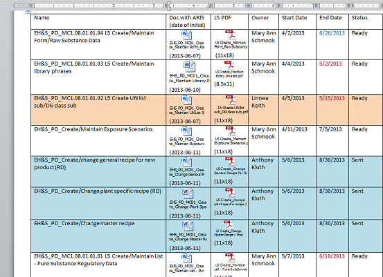

Project Presentation
Corporate Regulatory and Data Group
Razzi Abuissa, Summer 2013
My Project:
Standardize the process of US/Canada Chemical Data Registration
Requests come from
Registration is required by
Steps:
- Map out the current process
- Propose improvements
- Correct historical data
- Organize supporting documents
Week 1: Getting to Know the Group
Manager: Mark Loch, "The Data Guy"
Mentor: Cindy Huang, "The Scientist"
"Committed to zero"
Week 1: Setting up


Week 2: Process Mapping
Cindy took a trip to China to deliver regulatory documents, so I helped out with process mapping in the meantime."We will help liberate DuPont’s potential by ruthlessly and purposefully ripping out unnecessary complexity in our business operations."
- Created templates for 22 processes
- Achieved high-level overview of Dupont and EH&S
- Gained familiarity with process mapping

Week 3: Understanding how DuPont Handles Regulatory Documents and Data
- Completed exercises exploring functionality of SAP EH&S System
- Began recording tutorial to introduce new users to this functionality
- Learned about DOCS Open, which stores regulatory documents
- Archived over 200 documents in a batch job

Week 4: Scripting and Celebrating
- Worked on Excel driver to process 70 companies worth of EPA reports
- Began charting how CRDG processes North America chemical regulatory data
- Celebrated the independence of The United States of America
- Organized my progress and plans into this presentation

Week 5 and Beyond
Progress:
- Learned about how DuPont keeps track of regulatory data
- Identified inefficiencies in the process and potential sources of error
- Began mapping process to illustrate what can be improved
Next steps:
- Finish process map and check that all special cases are accounted for
- Propose migrations to integrate all information into one system
- Automate data management to increase efficiency and remove human error
Finish Process Map
For my original project, I will map out the current process and propose suggestions to streamline the process.

Propose Migrations to Manage All Data in One Location
Adding columns for when PMNs were sent and approved in SAP EH&S will remove the necessity for a parallel Excel document that stores this information.


Automate Data Management
Computers can automate various aspects of regulatory data management to ensure data is properly handled.
- Creating forms to process xxxs all at once
- Organizing data to be more useful and meaningful
- Audit the database to ensure best practices are abided and data stays up-to-date
- Equip DuPont with the best tools
Thanks!
Thank you to the 1 DuPont team and all employees pushing The Company forward, the CRDG team, my fellow CRP 708 coworkers, and our carpool.